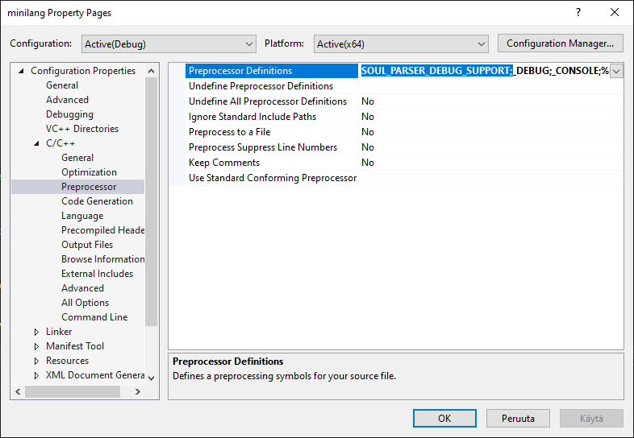

Soul parsers have a debug logging capability that is by default turned off. To enable the parser debug logging, set the SOUL_PARSER_DEBUG_SUPPORT preprocessing symbol and recompile the parser project: 